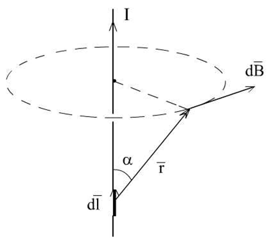
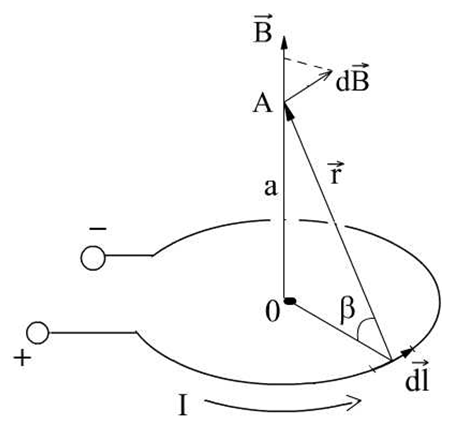
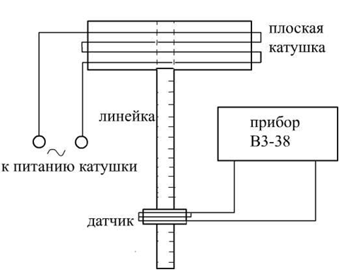

Ознакомление с одним из методов получения магнитного поля в пространстве при помощи плоской катушки с током. Изучение явле-ния взаимной индукции.
Известно, что источником магнитного поля являются либо посто-янные магниты, либо проводники с током.
Между проводниками, по которым протекают электрические то-ки, возникают пондеромоторные (механические) силы взаимодей-ствия, зависящие от силы этих токов и расположения проводников относительно друг друга.
Во всех точках пространства, окружающего произвольный про-водник с током, всегда существует обусловленное этим током поле сил. Это поле называется магнитным полем тока. Термин «магнит-ное поле» был введен английским физиком М. Фарадеем, считавшим, что как электрические, так и магнитные взаимодействия осуществля-ются посредством единого материального поля.
Природа макроскопического магнитного поля, создаваемого про-водниками с током, заключается в движении электрически заряжен-ных микрочастиц (электронов, протонов, ионов).
Основной характеристикой магнитного поля, представляющей собой среднее значение суммарного действия микроскопических по-лей, созданных отдельными микрочастицами, является вектор маг-нитной индукции \( \vec{B} \).
Очевидно, что значение и направление магнитной индукции \( \vec{B} \) движущегося заряда будет зависеть от величины самого заряда, его скорости и удаленности до точки измерения индукции. Если вместо заряда взять элементарный проводник – элемент тока – \( I \vec{dl} \), можно рассчитать для него вектор магнитной индукции для любой точки пространства, в котором находится проводник.
Закон Био-Савара-Лапласа позволяет определить вектор индук-ции магнитного поля, созданного элементом тока:
$$ d\vec{B} = \frac{\mu \mu_0}{4 \pi} \cdot \frac{[\vec{dl} \cdot \vec{r}]I}{r^3} (1)$$
\( I \vec{dl} \) - элемент тока;
\(I \) - сила тока в проводнике
\( \vec{dl} \) - вектор, равный по модулю длине \( dl \) проводника и совпадающий по направлению с направлением тока;
\( \mu \) - магнитная проницаемость среды.
\( \mu_0 = 4 \pi \cdot 10^{-7} \) Гн/м - магнитная постоянная;
\( \vec{r} \) - радиус-вектор, проведенный от середины элемента проводника к точке, в которой определяется магнитная индукция
Направления вектора \( d \vec{B} \) – силовые линии магнитного поля – определяются прави-лом векторного произве-дения, и представляют собой концентрические окружнос-ти, центр которых лежит на прямой, проходящей через элемент \( \vec{dl} \). Векторы \( \vec{dl} \),\( \vec{r} \),\( d \vec{B} \) образуют правовинто-вую систему (рис. 1).

Рис. 1
Величина вектора магнитной индукции \( d \vec{B} \) может быть выражена следующим образом:
$$ |d \vec{B}| = \frac{\mu \mu_0}{4 \pi} \cdot {I sin \alpha}{r^2}dl $$
Рассмотрим круговой проводник с током.
Определим величину и направление вектора магнитной индукции \( \vec{B} \) в какой-либо точке, лежащей на перпендикуляре, проведенном че-рез центр этого витка (рис. 2).

Рис.2
Выделим на кольцевом проводнике с током радиуса R элемент \( d \vec{l} \) . От этого элемента проведем радиус-вектор \( \vec{r} \) в т.А, лежащую на оси симмет-рии. Направление вектора \( d \vec{B} \) в т. А определяется векторным произведением (1).
Согласно принципу супер-позиции магнитных полей, результи-рующая индукция магнитного поля в т. А явля-ется суммой полей всех элементов, составляющих кру-говой проводник.
Результирующее поле будет направлено вдоль оси симметрии, а его величину вычислим интегрированием
$$ B = \int_L dB cos \beta = \frac{\mu \mu_0}{4 \pi} I cos \beta \frac{sin \alpha}{r^2} \int_0^{2 \pi R} dl$$
Проведя интегрирование, получим
$$ B = \frac{\mu \mu_0}{4 \pi} I cos \beta \frac{2 \pi R}{r^2} = \frac{\mu \mu_0}{2} \frac{IR^2}{(a^2 + R^2)^{\frac{3}{2}}} (4)$$
Если круговой проводник находится в воздухе, то магнитную проницаемость среды \( \mu \), входящую в формулу (4), можно прибли-женно считать равной 1.
Для катушки, имеющей N близко расположенных витков, величи-на магнитной индукции на оси кругового проводника
$$ B_o = N \cdot B(5)$$
Плоская катушка, маг-нитное поле которой надо определить, пред-ставляет собой сово-купность большого коли-чества витков медного провода, близко располо-женных на непроводя-щем каркасе (рис. 3). Параметры плоской ка-тушки представлены на измеритель-ном стенде.

Рис. 3
Питание катушки осуществляется сетевым напряжением (220 В, 50 Гц).
Вдоль оси катушки, перпендикулярно ее плоскости, расположена измерительная линейка, на которой нанесена шкала расстояний от центра катушки. Цена деления шкалы 1 см. На измерительной линей-ке предусмотрены отверстия для закрепления измерительного датчи-ка.
Измерительный датчик представляет собой также плоскую ка-тушку, но только гораздо меньших размеров, чем катушка, создаю-щая поле. Переменное магнитное поле индукции , создаваемое большой катушкой, порождает изменяющийся магнитный поток че-рез датчик, расположенный вблизи катушки на измерительной ли-нейке. В этом случае, согласно явлению электромагнитной индукции, в измерительной катушке возникает индукционный ток. ЭДС индук-ции, соответствующая этому индукционному току, определяется за-коном Фарадея:
$$ \varepsilon_l = - \frac{d \Phi}{dt} = - \frac{d}{dt}(\vec{B} \cdot \vec{S}) = - \frac{dB}{dt} S cos \phi $$
1. Включить стенд, лабораторную работу №1. Включить вольт-метр переменого напряжения В3-38 (или другой прибор, выполня-ющий аналогичные функции). Установить на вольтметре необходи-мый диапазон измерений – 30 мВ.
2. Установить измерительный датчик в центре плоской катушки.
3. Включить питание плоской катушки. Записать показания воль-тметра в таблицу измерений для расстояния а=0.
4. Приведем в соответствие показания вольтметра (ЭДС индукции \( \varepsilon_i \) ) и величину магнитной индукции поля В плоской катушки, рассчи-танной по формуле (5), учитывая, что \( B ~ \varepsilon_i \).
$$ k = \frac{B_0}{U_0} (6)$$
Где \( B_0 \) - величина магнитной индукции, рассчитанной по формуле (5) при а=0;
\( U_0 \) - показания вольтметра, если датчик установлен в центре плоской ка-тушки.
5. Передвигая датчик вниз по измерительной линейке с шагом 1 см, измерить ЭДС индукции как минимум для 10 точек. Показания вольтметра записать в таблицу. Провести 3 серии измерений.
| \( a \) , см | 0 | 1 | 2 | 3 | 4 | 5 | 6 | |||
|---|---|---|---|---|---|---|---|---|---|---|
| \( \varepsilon_i \) , мв | ||||||||||
| \( B_{izm} \), Тл | ||||||||||
| \( B_{rasch} \) | ||||||||||
6. Рассчитать две зависимости В(а): одну по формуле (5) для каждого значения а, другую – используя коэффициент k, определен-ный в пункте 4, и показания вольтметра из таблицы ( B=kU ).
7. Построить зависимости \( B_{rasch} \) и \( B_{izm} \) на одном графике в одном масштабе.
8. Зная зависимость \( B_{izm} (a) \), определить для каждого значения а абсолютную погрешность \( \Delta B \), выраженную в теслах (Тл),
$$ \Delta B = k \Delta U (7)$$
Где \( \Delta U = \Delta U_{prib} + \Delta U_{sluch} \) - абсолютная погрешность измеряемого напряжения